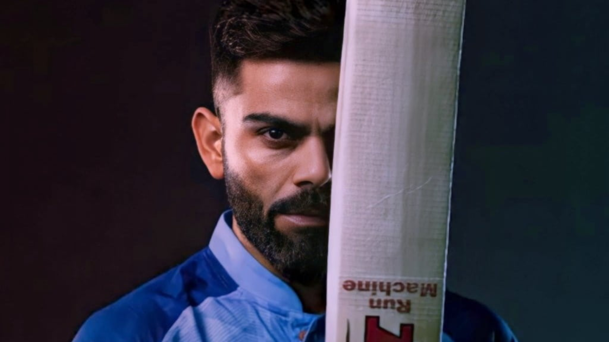

Born 5 November 1988
Virat Kohli is born on 5 November 1988.he is an Indian international cricketer and the former captain of the Indian national cricket team who plays as a right-handed batsman for Royal Challengers Bangalore in the IPL and for Delhi in Indian domestic cricket. Widely regarded as one of the greatest batsmen of all time,[4] Kohli holds the records for scoring most runs in T20 internationals and in the IPL. In 2020, the International Cricket Council named him the male cricketer of the decade. Kohli has also contributed to a number of India's successes, including winning the 2011 World Cup and the 2013 Champions trophy.
Virat Kohli was born on 5 November 1988 in Delhi to a Punjabi Hindu family. His father, Prem Kohli, worked as a criminal lawyer and his mother, Saroj Kohli, served as a housewife. He has an older brother, Vikas, and an older sister, Bhawna.[5] Kohli's formative years were spent in the Uttam Nagar and commenced his early education at Vishal Bharti Public School.[6] According to his family, Kohli exhibited an early affinity for cricket as a mere three-year-old. He would pick up a cricket bat, display natural skill, and request his father to bowl to him.[7] In 1998, the West Delhi Cricket Academy (WCDA) was created and on 30 May of that year, Prem Kohli, espoused his younger son's fervor for cricket, assisted nine-year-old Kohli's aspirations and arranged for him to meet Rajkumar Sharma, who initially perceived him to be just another enthusiastic and determined young boy. However, two weeks later, Sharma was impressed by Kohli's accuracy and power in throwing.[8] Upon the suggestion of their neighbours, Kohli's father considered enrolling his son in a professional cricket academy, as they believed that his cricketing abilities merited more than just playing in the gully cricket.[9] Despite his abilities, he faced the setback of being unable to secure a place in the under-14 Delhi team, not due to a lack of merit but due to extraneous factors. Prem Kohli received offers to relocate his son to influential clubs, which would have ensured his selection, but he declined the proposals, as he was determined that Kohli should earn his recognition based on his own merit and overcome the system of nepotism and deceit prevalent in the Delhi and District Cricket
In August 2008, Kohli was selected for inclusion in the ODl squad for the tour of Sri Lanka and the Champions Trophy in Pakistan. Prior to the Sri Lankan tour, Kohli had limited experience, with only eight List A matches under his belt.[45] So, his selection was considered a "surprise call-up". During the Sri Lankan tour, as both first-choice openers Sachin Tendulkar and Virender Sehwag, were unable to play due to injury, Kohli was required to fill the role of makeshift opener throughout the series. On 18 August 2008, Kohli made his international debut at the age of 19 in the first ODI of the tour, where he was dismissed for 12 runs, caught dead in front by an incutter from Nuwan Kulasekara.[48] However, in the fourth match of the series, Kohli achieved his inaugural half century in the ODl format, with a total of fifty-four runs scored.
After Vettori's retirement, Kohli was appointed as the team's captain for the 2013 season.[318] Throughout the season, Kohli demonstrated a strong performance, scoring 634 runs in the tournament at an average of 45.28 and a striking rate of 138. Against the Delhi Daredevils, Kohli nearly reached his maiden century with a score of 99, eventually falling short by one run. Despite this, his impressive performance helped secure a 4-run victory for his team. In IPL 2014, Kohli had a relatively colder season, recording 359 runs across 14 matches with a batting average of 27.61 and a strike rate of 122.10, he was able to notch two half-centuries and his best score was a commanding 73. His team, ultimately placed seventh in the tournament.[321] Despite the team's mediocre performance, Kohli remained a popular figure and was the most searched player leading into the following season.[322] During the 2015 IPL, Kohli experienced a resurgence in his batting performance, contributing towards securing his team's qualification to the playoffs. He finished the season as the fifth highest run-scorer, amassing a total of 505 runs at an average of 45.90 and a strike rate exceeding 130.[323] In the 46th match of the season, Kohli scored an undefeated 82 runs in a match against the Mumbai Indians. This innings was highlighted by his partnership with AB De Villiers, in which the duo collaborated for a 215-run stand, marking the third instance of a 200-run partnership in IPL history.[324] In the 2016 IPL season, Kohli, captaining the Royal Challengers Bangalore, led his team to a third runners-up finish[325] and shattered the record for most runs scored in a single season of the tournament. The previous record of 733 runs, held jointly by Chris Gayle and Mike Hussey, was surpassed by Kohli as he amassed 973 runs in 16 matches, averaging 81.08 runs per game. This performance earned him the coveted Orange Cap and the esteemed Most Valuable Player Award of the Vivo IPL 2016.[326] Kohli's campaign was marked by his remarkable innings, with four centuries to his name, a feat previously unaccomplished by him in the Twenty20 format.[327] In a match against Kings XI Punjab, he played a knock of 113*, which remained as his best performance of the season.[328] In October 2016, Kohli announced at the launch event of his biography, "Driven: The Virat Kohli Story" in New Delhi, that he would permanently play for Royal Challengers Bangalore, the franchise he had been captaining for several seasons.